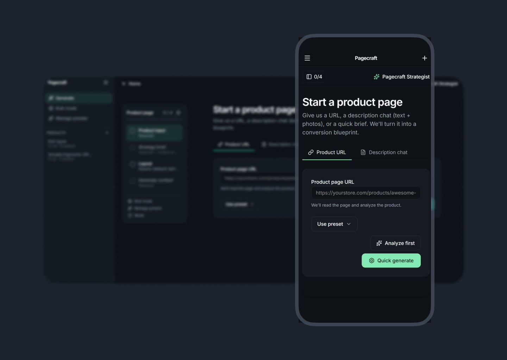
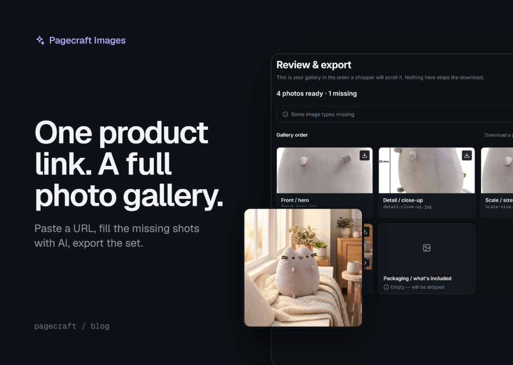
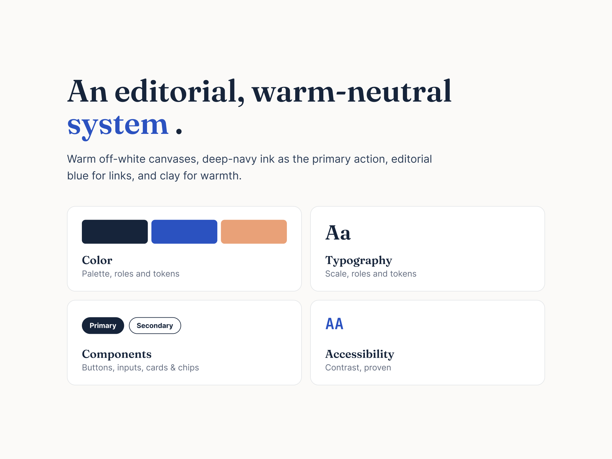
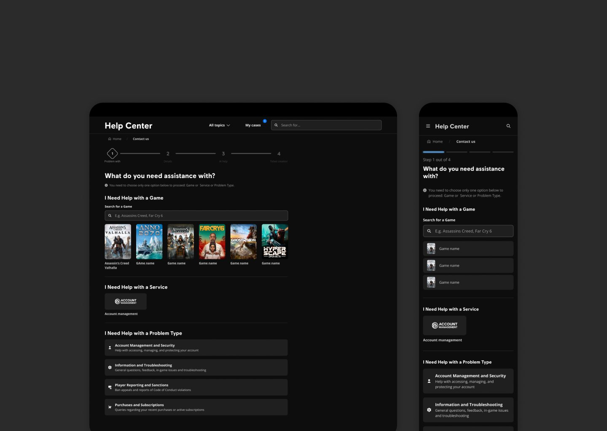

AI product page generator
Paste a product URL and it drafts a product page. Built in Lovable with Claude.
Read case study →Senior product designer
I design complex digital products end to end, from research to release, including AI features. I use AI tools in my own design work, and I designed and built an AI product. Eight years in product design.
Open to full-time senior product design roles.
Also available as an independent consultant for design and build projects.

Paste a product URL and it drafts a product page. Built in Lovable with Claude.
Read case study →
An AI image workflow that helps small sellers turn existing product photos into a complete, export-ready gallery.
Read case study →
Color and type tokens, components and usage guidelines, with a documentation site.
Read case study →
A guided flow that helps players solve an issue before they open a ticket. It reduced tickets routed to one topic by up to 24%, on a platform with 2M+ players a year.
Read case study →From discovery and research to release, and the changes after release.
I test flows with users before they are built, and collect feedback after release.
I work with product managers, engineers, QA and production from the first sketch to release.
Multi-step flows with edge cases, and navigation and information architecture for large platforms.
Reusable components and guidelines. WCAG rules for contrast, keyboard navigation and interaction states.
Prototypes in Figma that engineers can build from. I know HTML and CSS, so I can talk with engineers about how a design will be built.
I use Claude to sort research notes and find patterns. My own Claude skills run How Might We questions and first concept ideas.
I set the direction in Figma, then use Claude Design to try colours, themes and layout options. Choosing what works stays my decision.
I turn designs into clickable prototypes and working builds with Claude Code and Lovable, so ideas get tested on real screens early.
I design AI features inside real user flows, including what happens when the AI gets it wrong.
My strongest side is the ability to quickly understand and learn new products and areas. How did that happen? I learned design by myself, and it turned out to give me the ability to learn how to learn and connect the dots.
I would like to work on projects that allow AI integration in different flows. I’m also very eager to build an AI agent. I have experience with an AI assistant, but I’m looking for an opportunity to get to the next level. I’m interested in complex projects like medical, financial or HR tools.
Most of the time I work as the lead and solo designer on a project. I take care of the organizational side, such as timelines and priorities, and also the day-to-day technical work: creating mockups, conducting research and so on.
I use AI in different stages of a project, from exploration to prototyping. I have also shipped a couple of pet projects, testing and improving my workflows. The tools I use the most are Claude and Lovable.
Yes, two. Pagecraft is a live MVP: paste a product URL and it writes a product page. I built it in Lovable with Claude and my own skills. Echo writes posts in a creator’s own style: I took it from research to a working build with Claude Chat, Claude Design and Claude Code. My most ambitious one is still in progress: I’m working on a design system generator aligned with Figma.
Not as a front-end developer. I know HTML and CSS, which helps me work with AI and sometimes fix design implementation issues quickly.
Yes, remotely: contract design work inside your team, design audits and consultations. Email me about your project.